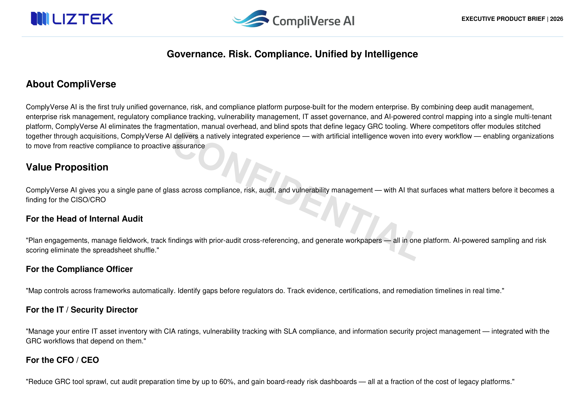
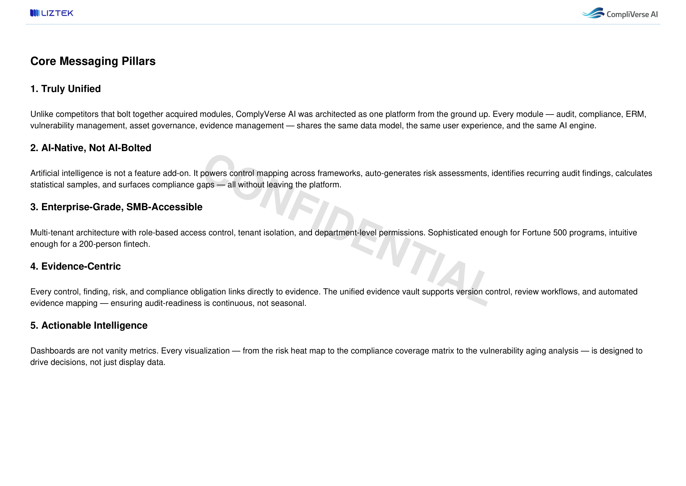
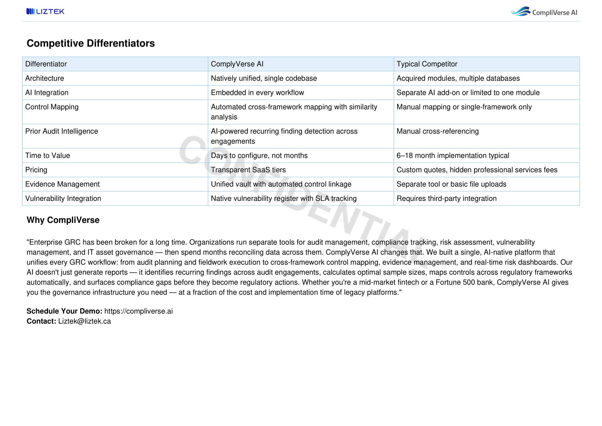

CONFIDENTIAL EXECUTIVE PRODUCT BRIEF | 2026 Governance. Risk. Compliance. Unified by Intelligence About CompliVerse CompliVerse AI is the first truly unified governance, risk, and compliance platform purpose-built for the modern enterprise. By combining deep audit management, enterprise risk management, regulatory compliance tracking, vulnerability management, IT asset governance, and AI-powered control mapping into a single multi-tenant platform, CompliVerse AI eliminates the fragmentation, manual overhead, and blind spots that define legacy GRC tooling. Where competitors offer modules stitched together through acquisitions, CompliVerse AI delivers a natively integrated experience — with artificial intelligence woven into every workflow — enabling organizations to move from reactive compliance to proactive assurance Value Proposition CompliVerse AI gives you a single pane of glass across compliance, risk, audit, and vulnerability management — with AI that surfaces what matters before it becomes a finding for the CISO/CRO For the Head of Internal Audit "Plan engagements, manage fieldwork, track findings with prior-audit cross-referencing, and generate workpapers — all in one platform. AI-powered sampling and risk scoring eliminate the spreadsheet shuffle." For the Compliance Officer "Map controls across frameworks automatically. Identify gaps before regulators do. Track evidence, certifications, and remediation timelines in real time." For the IT / Security Director "Manage your entire IT asset inventory with CIA ratings, vulnerability tracking with SLA compliance, and information security project management — integrated with the GRC workflows that depend on them." For the CFO / CEO "Reduce GRC tool sprawl, cut audit preparation time by up to 60%, and gain board-ready risk dashboards — all at a fraction of the cost of legacy platforms."

CONFIDENTIAL Core Messaging Pillars 1. Truly Unified Unlike competitors that bolt together acquired modules, CompliVerse AI was architected as one platform from the ground up. Every module — audit, compliance, ERM, vulnerability management, asset governance, evidence management — shares the same data model, the same user experience, and the same AI engine. 2. AI-Native, Not AI-Bolted Artificial intelligence is not a feature add-on. It powers control mapping across frameworks, auto-generates risk assessments, identifies recurring audit findings, calculates statistical samples, and surfaces compliance gaps — all without leaving the platform. 3. Enterprise-Grade, SMB-Accessible Multi-tenant architecture with role-based access control, tenant isolation, and department-level permissions. Sophisticated enough for Fortune 500 programs, intuitive enough for a 200-person fintech. 4. Evidence-Centric Every control, finding, risk, and compliance obligation links directly to evidence. The unified evidence vault supports version control, review workflows, and automated evidence mapping — ensuring audit-readiness is continuous, not seasonal. 5. Actionable Intelligence Dashboards are not vanity metrics. Every visualization — from the risk heat map to the compliance coverage matrix to the vulnerability aging analysis — is designed to drive decisions, not just display data.

CONFIDENTIAL Competitive Differentiators Differentiator CompliVerse AI Typical Competitor Architecture Natively unified, single codebase Acquired modules, multiple databases AI Integration Embedded in every workflow Separate AI add-on or limited to one module Control Mapping Automated cross-framework mapping with similarity analysis Manual mapping or single-framework only Prior Audit Intelligence AI-powered recurring finding detection across engagements Manual cross-referencing Time to Value Days to configure, not months 6–18 month implementation typical Pricing Transparent SaaS tiers Custom quotes, hidden professional services fees Evidence Management Unified vault with automated control linkage Separate tool or basic file uploads Vulnerability Integration Native vulnerability register with SLA tracking Requires third-party integration Why CompliVerse "Enterprise GRC has been broken for a long time. Organizations run separate tools for audit management, compliance tracking, risk assessment, vulnerability management, and IT asset governance — then spend months reconciling data across them. CompliVerse AI changes that. We built a single, AI-native platform that unifies every GRC workflow: from audit planning and fieldwork execution to cross-framework control mapping, evidence management, and real-time risk dashboards. Our AI doesn't just generate reports — it identifies recurring findings across audit engagements, calculates optimal sample sizes, maps controls across regulatory frameworks automatically, and surfaces compliance gaps before they become regulatory actions. Whether you're a mid-market fintech or a Fortune 500 bank, CompliVerse AI gives you the governance infrastructure you need — at a fraction of the cost and implementation time of legacy platforms." Schedule Your Demo: https://compliverse.ai Contact: Liztek@liztek.ca